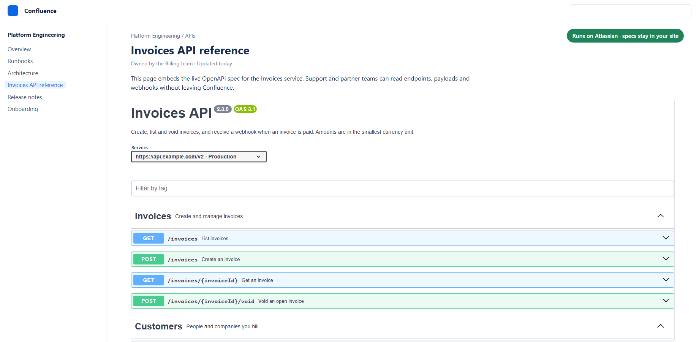
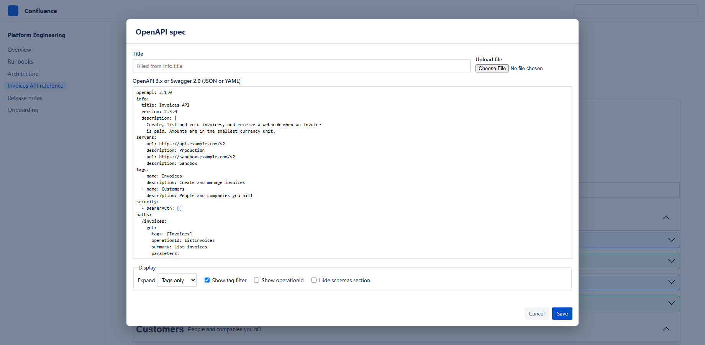

OpenAPI & Swagger Viewer for Confluence
Render OpenAPI 3.1/3.0 and Swagger 2.0 docs on any page. Runs on Atlassian: your API specs never leave Confluence.

Add a spec to a page
- Edit a Confluence page, type
/OpenAPI Viewerand press Enter. - Paste your OpenAPI 3.1, 3.0 or Swagger 2.0 document (YAML or JSON), or click Upload file.
- Optionally set a title and display options, then click Save and publish the page.
To update the spec later, edit the page, select the macro and click its edit (pencil) icon.

Display options
| Option | Effect |
|---|---|
| Expand | Tags only (default) lists operations per tag; Everything opens every operation; Collapsed shows tags only. |
| Show tag filter | Adds a filter box for long specs. |
| Show operationId | Displays each operation's operationId. |
| Hide schemas section | Hides the schema list at the bottom. |
Limits and behaviour
- Specs up to 4,000,000 characters (about 4 MB). Large specs save in several parts; keep the editor open until it closes.
- Try it out and authorization are turned off. Requests from inside Confluence would be blocked by browser security rules, and turning them off guarantees no data leaves your site.
- External
$refURLs are not fetched. Bundle your spec into one file first, for example withredocly bundle. - Page permissions apply: people who cannot view the page cannot read its spec. Copying a page gives the copy its own spec.
- The spec is not part of page history: restoring an old page version keeps the current spec.
Data and security
The app is built on Atlassian Forge and is eligible for Runs on Atlassian: the spec is stored in Atlassian-hosted storage for your site and the app makes no external network calls. See the privacy policy.
Support
Report a problem or ask a question at https://github.com/harsh07032004/openapi-viewer-for-confluence/issues. Include the error message you see, if any.
Release notes
1.0.0: First release: OpenAPI 3.1/3.0 and Swagger 2.0 viewer, Runs on Atlassian.